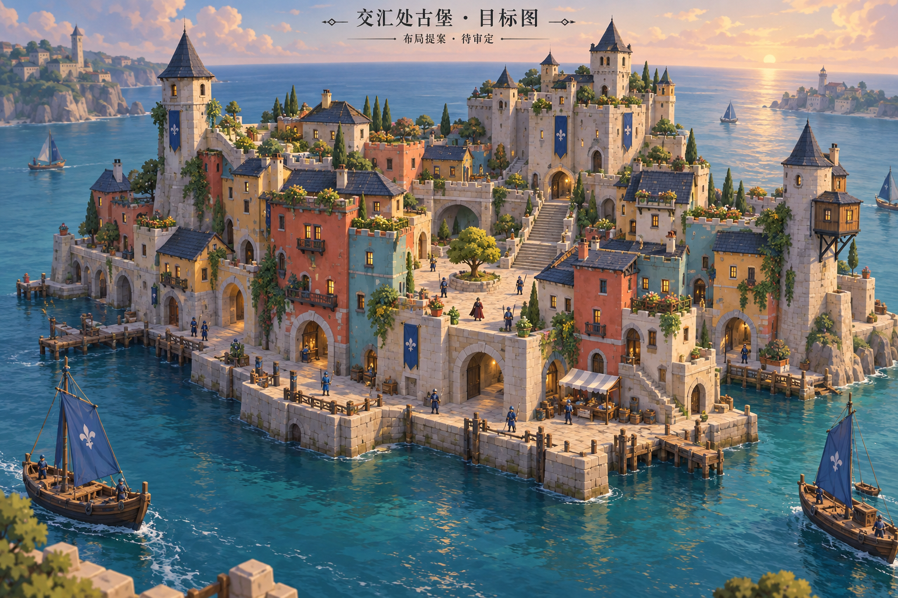

汇聚城堡 · 退台体量与区域核查
本批已进入 8931 原游戏 并同步 Godot。以下是游戏实际渲染，目标图仍用于对照，不代表已完全还原。
本批实景


前／中／后排住宅为三／四／五层；六处屋顶退台、花园护墙；清除重复窗饰，主堡采用垛口露台。11组 WFC 求解通过，码头→拱门→庭院→主堡路径通过，Godot 视觉适配通过。
资产为21个合并网格、37048三角面（上批26个、29600面）；增加侧立面窗框后面数上升，本批不宣称帧率改善。
与上批同机位对比

区域关系核查
左侧密集桥柱来源为原有电车系统，不是叹息之门新桥。两处中心约162.3米；逐三角面核查，门区桥梁最近表面距汇聚城堡原点约52.4米。没有据此移动城堡或截断线路；不能把背景可见直接当成几何相交。
尚未完成
主堡立面仍规整、缺少目标图的扶壁与立面节奏；花园和港口小场景仍稀疏；远景山体拉伸尖角仍需定位修复。未做完整手动通关、乘船或全帧率验收。
汇聚城堡 · 临水防御立面与庭院连接
本批实际接入8931，同源模型同步Godot。保留原WFC建筑和存档兼容；补临水城墙、垛口、庭院护墙、窗台花槽与屋面分缝。26网格、29600三角面。码头到主堡原碰撞通路与Godot适配检查通过，不代表完整美术验收。
进入原游戏检视汇聚城堡
整体实景

远处叹息之门长桥与此区域的空间衔接需要继续核查；目标的退台体量、花园和港口船舶尚未完整实现。
交汇处古堡 · 待审定目标图
根据原工程的贴水彩色岛城、拱廊、退台花园与飞楼设定生成。此图仍为设计目标。下方保留布局样板，并新增已接入的第一批实景；目前不是目标图的完整美术复刻。

内置生图工具生成 · 完整生成提示词
原游戏基线

Blender 布局样板 · 第一轮
只检验空间体量，尚未接入游戏；不是最终美术，也未运行 WFC。庭院13×7.6米，前拱净宽4米，主梯宽4.2米。小人标示约1.8米尺度。原游戏及用户编辑存档保持原样。

后续：原建筑模块/WFC细化 → 原世界水深与通路检查 → Web和Godot同步 → 同机位验收。
已接入 · 原模块＋WFC＋Blender细化
进入8931原游戏，从码头验收

11组原Townscaper建筑WFC求解通过，再在Blender整理为21网格、20438三角面。坡顶和塔尖为目标图指导的Blender细化，不宣称完全由WFC自动生成。庭院保持留白；原模块窗饰沿用，植物、退台花园和港口道具仍有美术差距。
原碰撞求解器的合成方向输入：码头→拱门→庭院→主堡入口通过，11.62秒，终点高6.59米。Godot同位绑定、解绑恢复通过。没有把这些检查称为完整手动游玩或船舶航线验收。
普通入口保留已有自定义城堡存档；验收链接仅本次显示新资产，不改存档。开始编辑会恢复原Townscaper编辑对象；新资产尚非逐格可编辑模型。
步行检查 · Godot检查 · 工程指南
本轮实际更新：庭院、退台与码头

26网格、27024三角面。码头到主堡通路再次通过；主堡门洞两侧檐口已让出通路。同一资产同步Godot。美术仍需对照目标继续收敛。
港池候选：独立验证，尚未派船
原水深不足；可逆海床候选找到两侧合格泊位，并通过港池出口到接近点的17.08米与10.25米局部路线。尚未验证跨地区通航、动态船体及上下船，不影响默认海床。
港池检查报告 · 检查港池候选